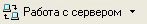
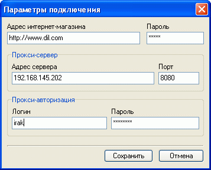

Задать параметры подключения, используемого для связи клиентской части комплекса с серверной, например, при обновлении данных, получении информации о заказах, редактировании каталога покупателей можно, вызвав окно параметров подключения из главного окна "Магазин - Сервер - Параметры подключения" или из других окон, где есть кнопка "работа с сервером":

:

Для автоматического сохранения паролей необходимо в реестре магазинов указать для соответствующего магазина опцию "Хранить логины и пароли в системном реестре Windows" (см. Реестр магазинов).
Адрес прокси-сервера и его порт имеет смысл указывать только когда необходима прокси-авторизация.